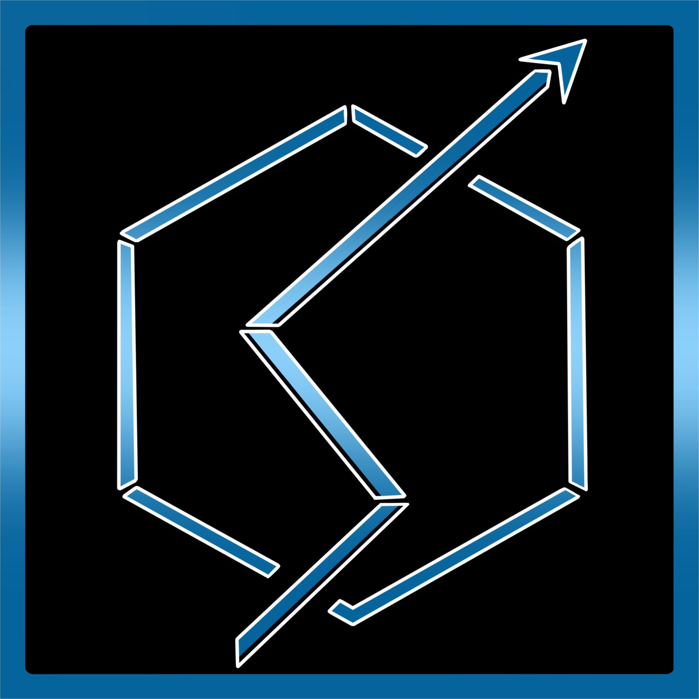

The YESEO app
This Slack based app is free to use and installable in any workspace.
This tool utilizes slash commands in Slack to gather actionable SEO information and insights from your articles and content.
Workshop headlines, view SEO data and identify trends. Available in English, French, Spanish and Portuguese.
2022 RJI Fellow Ryan Restivo